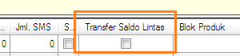

Transfer Saldo Lintas (3.7.1)
Fitur ini telah tersedia mulai versi 3.6.9 klik disini, namun di versi 3.7.1 diperbaharui, dimana yang semula letaknya di Setting -> Lain - lain dipindahkan ke Administrasi -> Grup Reseller. Dengan pembaharuan ini kita dapat menentukan Grup Reseller mana yang dapat melakukan transfer saldo lintas, dan mana yang tidak.

Dengan demikian untuk mengaktikan fitur di atas:
- Pertama, tentukan Grup Reseller yang akan diberi akses dapat melakukan transfer saldo lintas.
- Kedua, beri centang pada checkbox Transfer Saldo Lintas yang berada di Administrasi -> Grup Reseller pada Grup Reseller yang telah ditentukan.
- Ketiga, klik tombol Simpan.
- Selesai.
Bagi yang belum mengetahui kegunaan fitur Transfer Saldo Lintas silahkan klik disini.